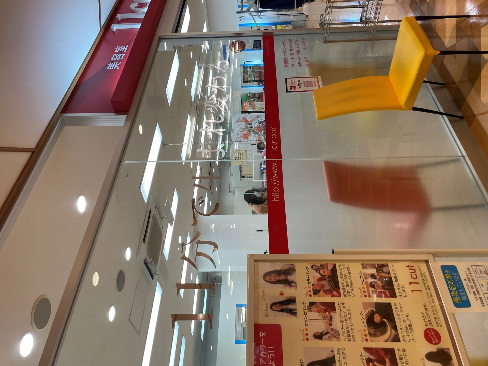

10/10フレル鷺沼4Fにて私が撮影
マッサージチェアコーナーに「ほぐし処」という魅力的な名前を付けているのが印象的。全体的に水色と白を使い清涼感を与えている。また、ショッピングモールにこういったコーナーがあることが面白いと感じた。
3.美容室イレブンカット

10/10フレル鷺沼4Fにて私が撮影
まず、「11cut」とあるのを見て「んっ？」と思った。左側には「11分で生まれ変わる」というキャッチコピーが。ホームページを見てみると、「11分のカット時間で料金が1,520円（税別）」という特徴の美容室だそうだ。